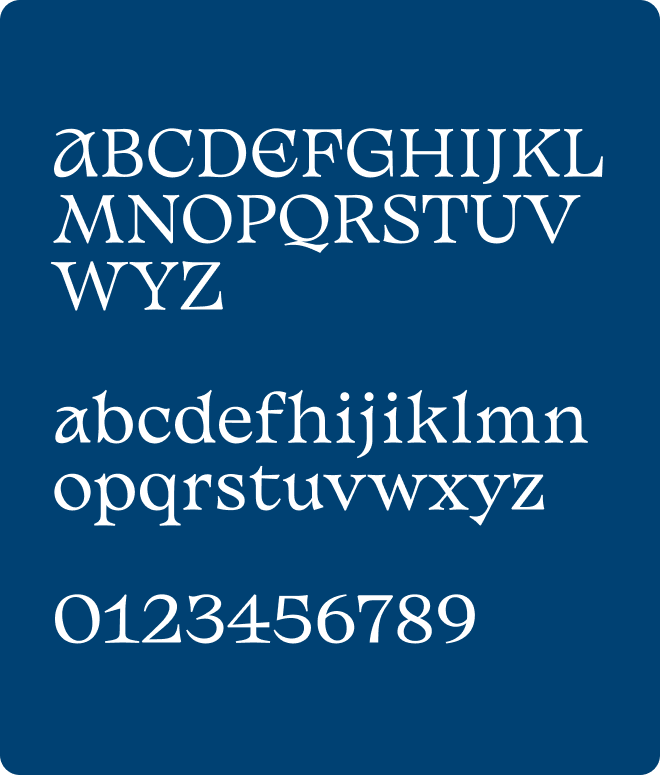

Sélectionnez-moi pour voir l'effet !
AaBbCcDdEeFfGgHhIiJjKkLlMmOoPpQq
AaBbCcDdEeFfGgHhIiJjKkLlMmOoPpQq
Histoire et inspirations
Approchez… Je suis Basteleur Moonlight, une typographie qui danse entre l'ombre et la lumière, née de l’intersection de traditions mystiques et de formes typographiques ancestrales. Si vous vous aventurez dans mon histoire, vous découvrirez que ma véritable inspiration trouve son origine dans les arcanes du Tarot de Marseille, plus particulièrement la carte du Bateleur. Je suis l’œuvre du studio Keussel, studio passionné par l’univers du le‡ttrage artisanal, du dessin de caractères et de la magie graphique. Conçu en 2022, mon design est une fusion entre des influences ésotériques, des références à l’histoire de la typographie et une touche contemporaine qui me rend unique. Le Magicien est un personnage emblématique du Tarot de Marseille, représentant le pouvoir de transformation, la création et l’illusion. La carte symbolise le moment où l’on prend en main les outils pour façonner son destin. De cette puissance créative et mystique, je tire mon essence, chaque lettre étant une sorte de manipulation magique des formes, une incantation typographique qui évoque un univers rempli de secrets et de symboles. Mais mon essence ne s’arrête pas au Tarot… Les influences des lettres gothiques et des capitales romaines, qui ont marqué les époques médiévales et renaissantes, sont gravées en moi. Les caractères gothiques, avec leurs formes anguleuses et rigides, ont contribué à mon style médiéval, tandis que les lettres romaines m’ont insufflé une grande stabilité et un ancrage classique. Mon appartenance aux Elzévirs, une famille de caractères née au XVIe siècle, renforce cet équilibre entre tradition et modernité..
Credits & details
pprochez… Je suis Basteleur Moonlight, une typographie qui danse entre l'ombre et la lumière, née de l’intersection de traditions mystiques et de formes typographiques ancestrales.
Si vous vous aventurez dans mon histoire, vous découvrirez que ma véritable inspiration trouve son origine dans les arcanes du Tarot de Marseille, plus particulièrement la carte du Bateleur. Je suis l’œuvre du studio Keussel, studio passionné par l’univers du le‡ttrage artisanal, du dessin de caractères et de la magie graphique. Conçu en 2022, mon design est une fusion entre des influences ésotériques, des références à l’histoire de la typographie et une touche contemporaine qui me rend unique. Le Magicien est un personnage emblématique du Tarot de Marseille, représentant le pouvoir de transformation, la création et l’illusion. La carte symbolise le moment où l’on prend en main les outils pour façonner son destin. De cette puissance créative et mystique, je tire mon essence, chaque lettre étant une sorte de manipulation magique des formes, une incantation typographique qui évoque un univers rempli de secrets et de symboles. Mais mon essence ne s’arrête pas au Tarot… Les influences des lettres gothiques et des capitales romaines, qui ont marqué les époques médiévales et renaissantes, sont gravées en moi. Les caractères gothiques, avec leurs formes anguleuses et rigides, ont contribué à mon style médiéval, tandis que les lettres romaines m’ont insufflé une grande stabilité et un ancrage classique. Mon appartenance aux Elzévirs, une famille de caractères née au XVIe siècle, renforce cet équilibre entre tradition et modernité..
Supported languages
94
px94
px1.2
%Je suis un texte incroyable qui permet de lire la super font Basteleur

Geometric counters
The counters (inner forms) are also based on geometric rules and most counters can be mirrored on at least one axis.
A